A powder room does not need much space to make a big impression.
In fact, elegant powder room decor often works better in a small room, because you can take real design risks without committing to a massive renovation.
I have always thought powder rooms deserve a little more personality than they usually get.
Why settle for a basic sink, mirror, and lonely towel when you can create a tiny room that feels genuinely special instead?
The trick comes down to choosing a few strong elements and letting them work together.
A beautiful mirror, dramatic wallpaper, warm lighting, or an interesting vanity can completely change the room without ever making it feel cluttered.
And yes, you can make a powder room look genuinely luxurious without spending your entire renovation budget on it.

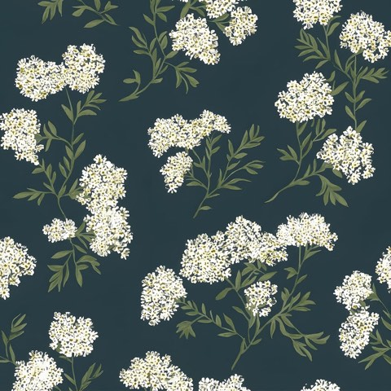
VEELIKE Dark Moody Navy Blue Floral Peel and Stick Wallpaper, 17.7 x 118 Inch
Shop on Amazon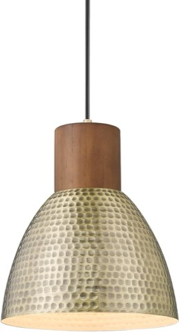
ELYONA Vintage Hammered Brass Pendant Light Fixture, 7 Inch, Small Hanging Light
Shop on AmazonWhat Should You Prioritize When Decorating a Powder Room?
If your budget does not allow you to change everything, spend your money where people will actually notice it most.
I would prioritize, in roughly this order:
- Lighting: it changes the entire atmosphere
- Mirror: it creates a major visual focal point
- Wallpaper or paint: it establishes the room's personality
- Faucet: a beautiful faucet adds an instant finishing touch
- Vanity: it anchors the room and provides essential function
- Hardware: small details can reinforce the overall style
You can save money on accessories, since you can always replace those later on.
A beautiful mirror with inexpensive towels can still look fantastic.
An expensive towel sitting beneath a boring builder-grade mirror will not magically fix the room on its own.
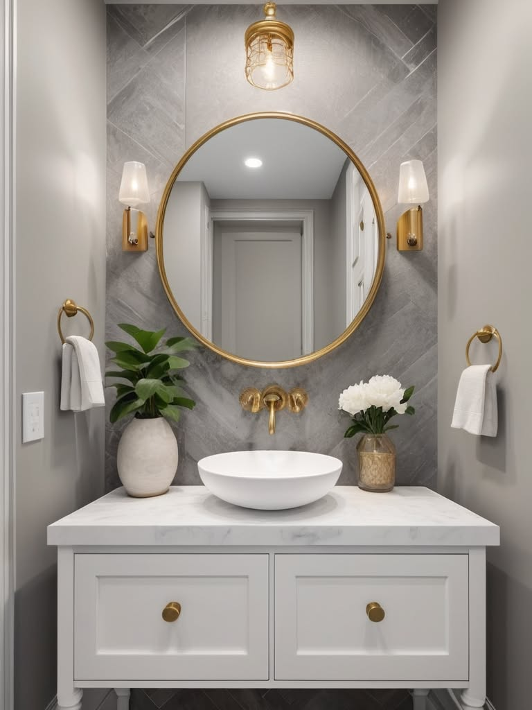
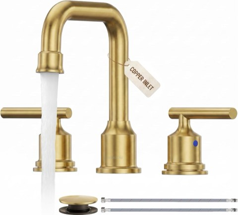
WOWOW Gold Bathroom Faucet, 3 Hole Widespread Vanity Sink Faucet, 8 Inch
Shop on AmazonHow Do You Keep Elegant Powder Room Decor From Looking Cluttered?
Small rooms punish indecision more than almost any other space in the house.
If you love five different styles, resist the temptation to use all five at once.
Choose one direction and let the room breathe around it.
I usually ask three questions before adding another decorative element to the room:
- Does it serve a purpose?
- Does it support the color palette?
- Does it improve the focal point?
If the answer stays no on all three, skip it entirely.
The most successful powder rooms often combine a small number of strong decisions rather than dozens of tiny, scattered ones.
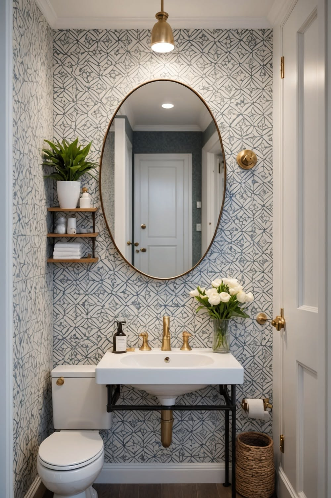
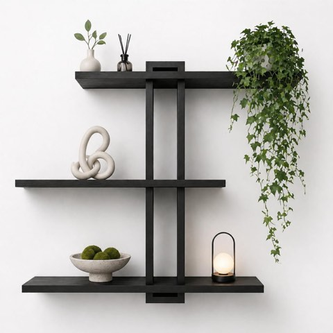
Black Floating Shelves for Bathroom, 3 Tier Pine Wood Wall-Mounted Shelf
Shop on Amazon15 Elegant Powder Room Decor Ideas
1. Create a Full Monochromatic Powder Room
If you want something sophisticated but relatively easy to coordinate, try a monochromatic scheme instead of mixing several colors.
Choose one color family and repeat it across several surfaces throughout the room.
For example, imagine a warm taupe powder room with taupe walls, slightly darker cabinetry, cream stone, aged brass, and beige textiles.
Or imagine a deep green room with green walls, a darker green vanity, antique brass hardware, and warm white towels.
The trick involves using different textures and shades rather than making every surface exactly the same tone.
That subtle variation gives the room real depth while still keeping the overall design calm.
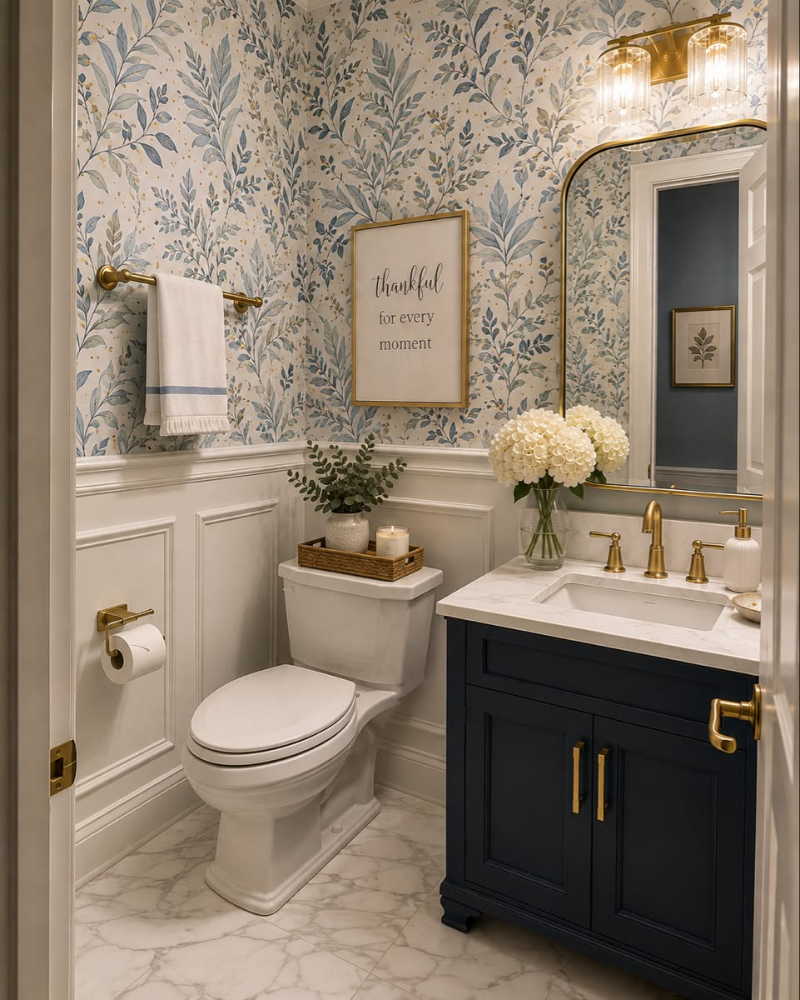
Black Vintage Floral Peel and Stick Wallpaper, 17.5 x 393 Inch
Shop on Amazon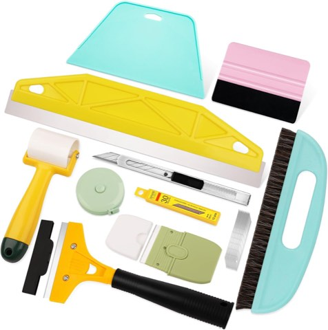
WRAPXPERT Peel and Stick Wallpaper Tools, Wallpaper Smoothing Tool Kit with Smoother
Shop on Amazon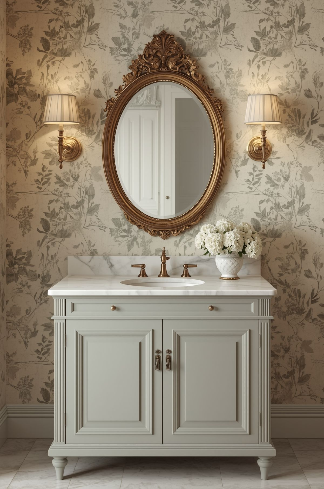
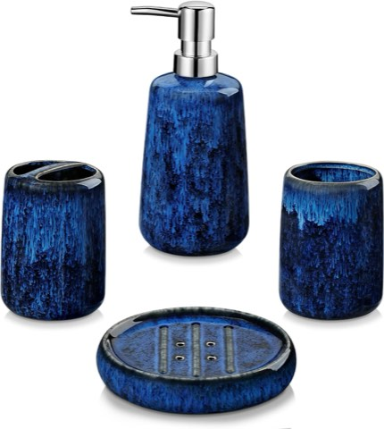
vancasso Blue Bathroom Accessories Set, Ceramic Soap Dispenser and Toothbrush Holder
Shop on Amazon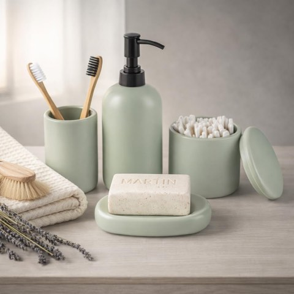
Ava Nord Modern Minimalist Ceramic Bathroom Accessories, Set of 4, Green
Shop on Amazon2. Style the Vanity With a Few Beautiful Accessories
This is where restraint really matters more than anywhere else in the room.
I usually recommend choosing only a few genuinely useful decorative pieces for the counter.
- A sculptural soap dispenser
- A small stone tray
- A folded hand towel
- A tiny vase
- A candle
- A small floral arrangement
That is enough, honestly.
You do not need a collection of decorative bottles lined up like they are waiting for a family portrait.
A powder room should feel prepared for guests, not overloaded with stuff.
Small details like stone trays, sculptural soap dispensers, fresh flowers, textured towels, and other decorative accessories are really what complete the experience.
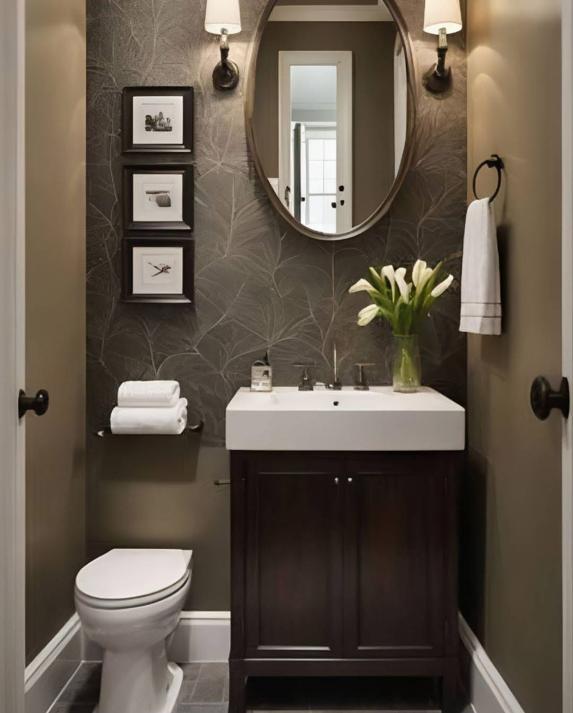
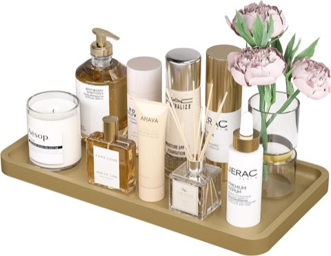
Weenson Gold Bathroom Vanity Tray for Countertop, Perfume, Makeup and Jewelry Decor
Shop on Amazon3. Add Natural Wood for Warmth
Elegant rooms can sometimes become too polished, almost sterile.
A little wood solves that problem fast.
A walnut vanity, oak shelf, wooden mirror frame, or small stool can soften hard surfaces like stone, tile, and metal.
I especially like warm wood with creamy walls and brass, because the combination feels sophisticated without ever becoming overly formal.
You can also use reclaimed wood if you prefer a more relaxed style overall.
The important part involves choosing one consistent wood tone.
Mixing several unrelated finishes can make a small powder room feel visually busy fast.
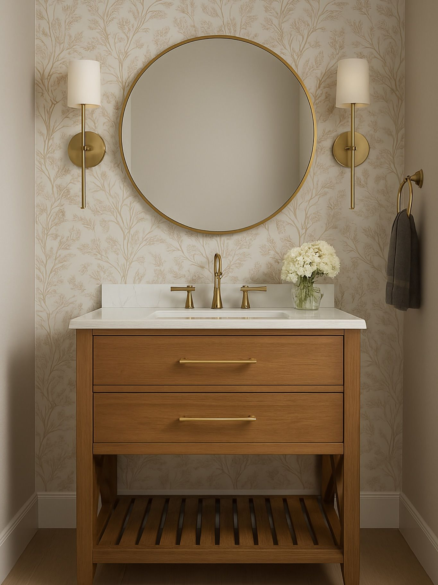
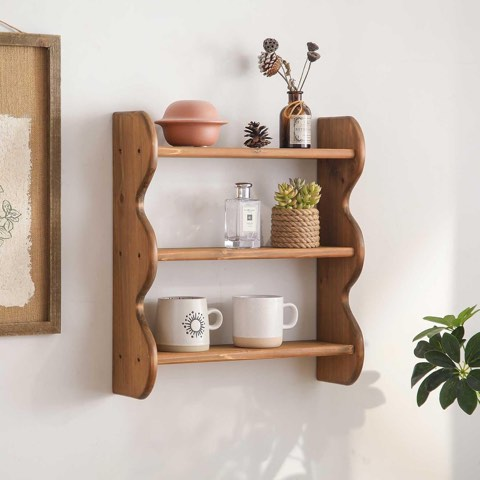
100% Solid Wood 3-Tier Wall Shelf, Rustic Floating Shelves, Wall-Mounted Storage Rack
Shop on Amazon4. Use One Strong Accent Color
A restrained color palette usually creates a more sophisticated room than a rainbow of competing finishes ever could.
Choose one primary color and one accent to pair with it.
- Warm white + brass
- Olive green + aged brass
- Navy + warm wood
- Taupe + black
- Charcoal + cream
You can repeat your accent color through the faucet, towels, artwork, and accessories throughout the room.
That repetition creates rhythm, which helps even a very small room feel genuinely designed rather than randomly decorated.
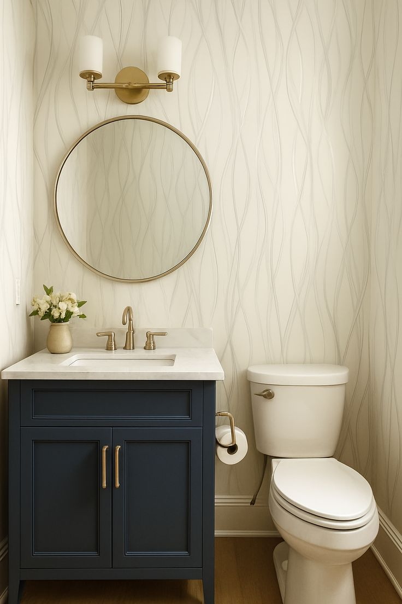
5. Add a Small Chandelier or Pendant
A tiny chandelier can completely change the personality of an elegant powder room.
This works especially well in rooms with higher ceilings.
A decorative fixture draws the eye upward and gives the whole space a more finished feeling.
Powder room lighting is worth treating as a decorative feature in its own right, rather than relying heavily on plain recessed lighting alone.
I would still make sure the fixture provides suitable illumination, but I would absolutely choose something beautiful over something purely functional.
Why hide the ceiling when you can make it part of the room's whole design?
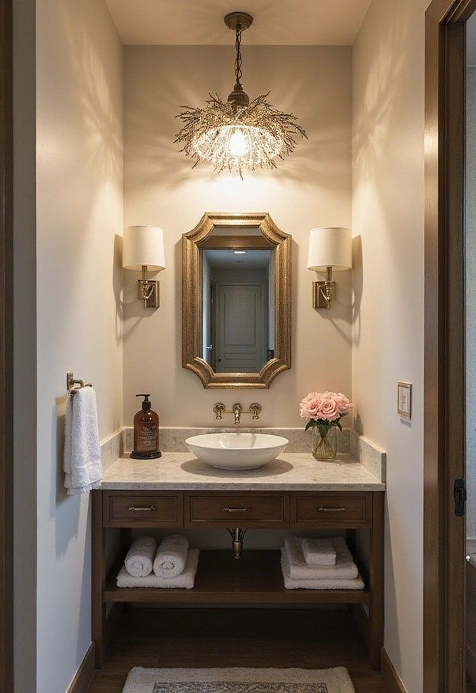
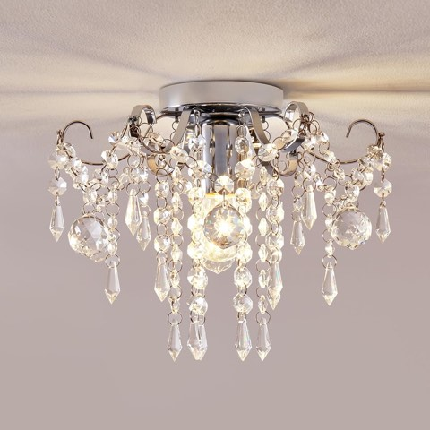
Small Crystal Chandelier, Mini Modern Flush-Mount Crystal Ceiling Light
Shop on Amazon6. Hang Art in Your Elegant Powder Room
A powder room can absolutely hold real art.
In fact, I think a small piece of artwork often feels more personal than another generic bathroom print.
Look for a vintage landscape, abstract painting, botanical illustration, or black-and-white photograph.
You do not need a huge gallery wall for this to work.
One carefully chosen piece above the toilet or beside the vanity can create a genuine focal point.
If your wallpaper already makes a statement, choose quieter artwork to go with it.
If your walls look simple instead, you can let the artwork become the star of the room.
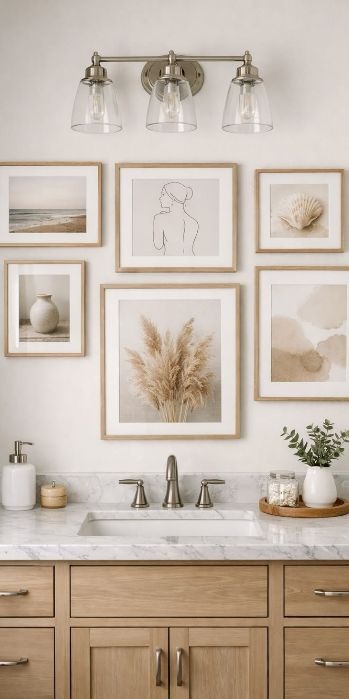
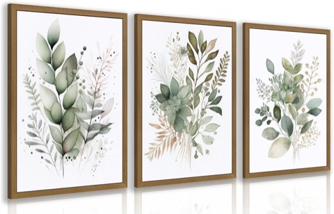
EisEver Watercolor Botanical Wall Art Set of 3, Sage Green Bathroom Wall Decor
Shop on Amazon7. Bring in Traditional Wall Paneling
If wallpaper feels too busy for your taste, architectural wall treatment can give you elegance without ever relying on pattern at all.
- Vertical panel molding
- Picture-frame molding
- Beadboard
- Thin wood slats
- Wainscoting
- Simple box molding
Paint the molding and walls in the same color for a sophisticated monochromatic effect.
I especially like this technique with warm white, taupe, muted green, and charcoal.
It adds real dimension without demanding attention away from every other feature in the room.
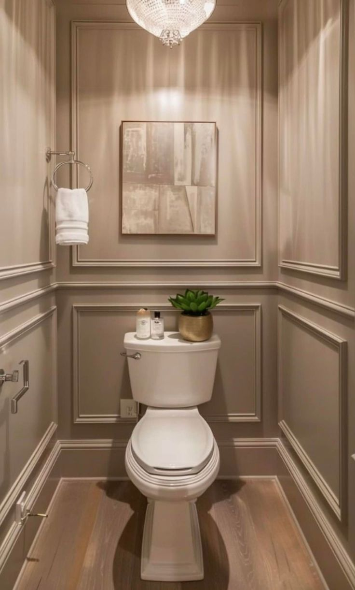
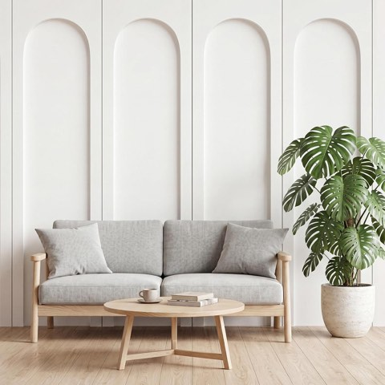
INMOZATA Arch Wainscoting Panels Kit, MDF Board and Batten Wall Panel Kit
Shop on Amazon8. Choose an Interesting Sink
Why should the sink just disappear into the vanity, anyway?
A powder room gives you room to treat the sink as a decorative feature in its own right.
A vessel sink can add real sculptural interest, while an integrated stone basin creates a cleaner, more contemporary look.
I particularly like handmade ceramic sinks for relaxed, character-filled interiors.
Pair one with a simple wall-mounted faucet and let the material speak for itself.
A distinctive sink is really an easy opportunity to turn an otherwise ordinary fixture into an actual focal point for the room.
Just remember that an interesting sink needs supporting elements around it.
If the basin already has a strong shape, keep the mirror and lighting relatively simple.
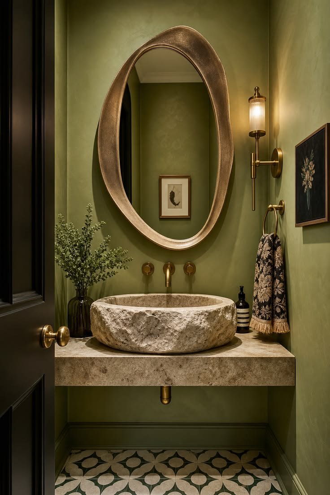
9. Add a Stone or Marble Countertop
You do not need to cover the entire room in marble to create an upscale feeling.
A small powder room gives you an excellent opportunity to use a beautiful stone countertop, because you need much less material than you would for a large bathroom.
- Carrara marble
- Calacatta-style stone
- Soapstone
- Travertine
- Honed limestone
- Quartz with subtle veining
If natural stone does not fit your budget, choose a quality engineered surface with restrained veining instead.
The goal involves creating texture and visual richness, not proving how much you spent on it.
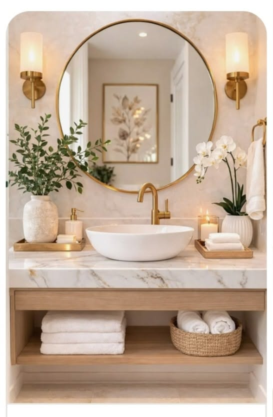
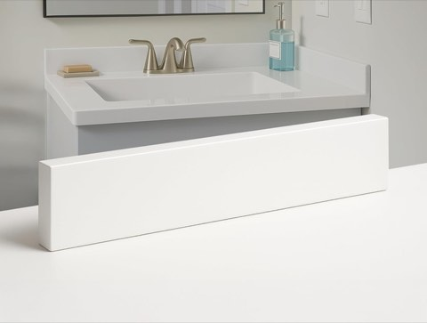
Bathroom Vanity Backsplash and Sidesplash, Super White Engineered Marble, 4 x 22 Inch
Shop on Amazon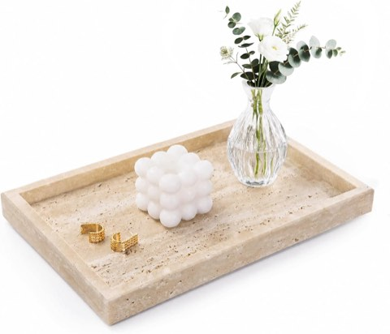
Natural Marble Bathroom Tray for Countertop and Home Decor, Decorative Vanity Tray
Shop on Amazon10. Try a Floating Vanity
A floating vanity can make a small powder room feel lighter overall, because it leaves some visible floor underneath it.
I particularly like this approach when you want a contemporary or transitional look.
Choose a simple wood vanity for warmth, or a painted vanity for more traditional character instead.
Keep the countertop relatively clean.
A small stone tray with hand soap and a folded towel usually looks more sophisticated than ten decorative objects all competing for attention.
The less visual clutter you create, the more important each beautiful piece actually becomes.
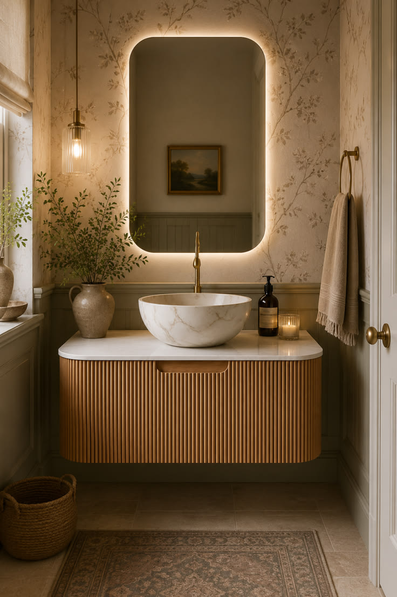
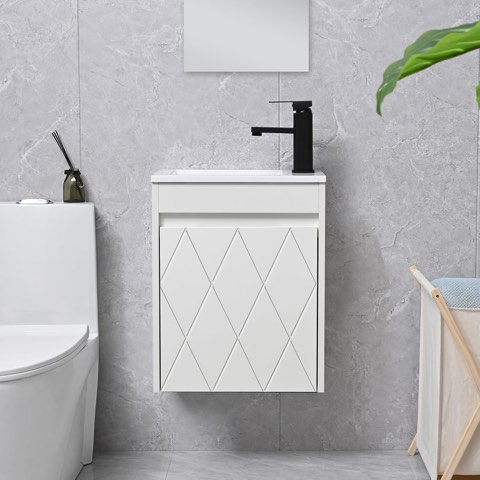
16 Inch Bathroom Vanity Sink Combo for Small Spaces, Wall-Mounted Cabinet Set
Shop on Amazon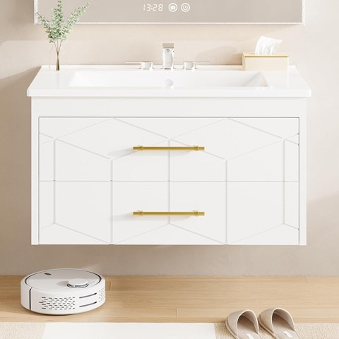
Garvee 30 Inch Floating Bathroom Vanity with Sink, 2 Storage Drawers, White
Shop on Amazon11. Install Statement Sconces Beside the Mirror
Lighting can genuinely make or break elegant powder room decor more than almost any other single choice.
A single overhead fixture often creates harsh shadows, especially around the face.
Instead, I prefer sconces positioned around the mirror, because they create a softer and more balanced glow.
- Opal glass sconces
- Alabaster shades
- Brass wall lights
- Sculptural ceramic fixtures
- Small decorative pendants
Softer lighting around the mirror genuinely creates a more welcoming powder room experience overall, especially for guests actually using that mirror.
I completely agree with that approach.
Your powder room should make people look good in the mirror, not interrogate them under a fluorescent spotlight.
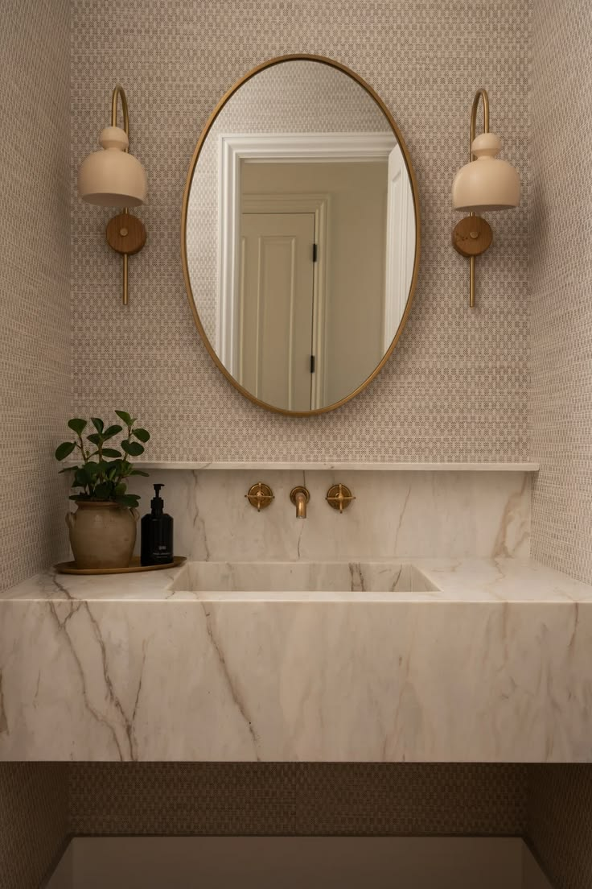
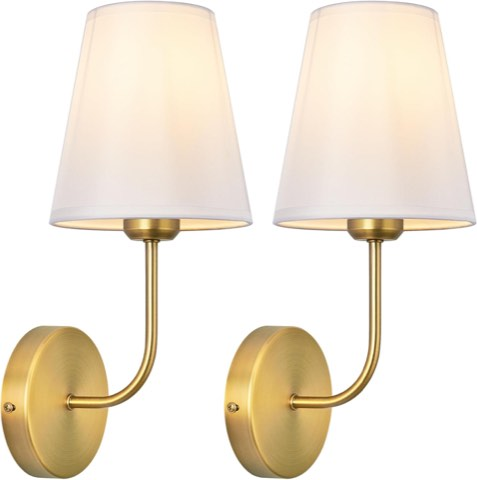
Antique Brass Hardwired Wall Sconce Set of 2, Gold Finish with White Fabric Shades
Shop on Amazon
12. Paint the Walls in a Deep, Moody Color
Who decided small rooms need white walls, anyway?
I have always found that rule far too restrictive.
A small powder room can handle saturated colors surprisingly well, because you do not spend hours inside it every day.
- Deep olive green
- Charcoal
- Navy blue
- Chocolate brown
- Warm terracotta
- Muted plum
- Dark taupe
The goal is not to make the room feel dark for the sake of it.
The goal is to create real depth and atmosphere instead.
One memorable powder room redesign leaned fully into the room's compact dimensions instead of fighting them, pairing dark color with bold wallpaper, brass fixtures, and multiple mirrors.
That approach works because you stop fighting the small footprint and start using it as part of the design itself.
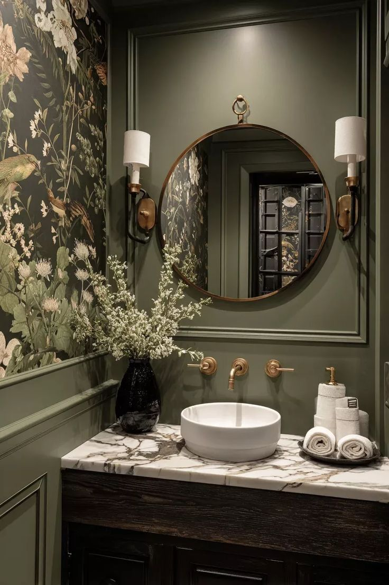
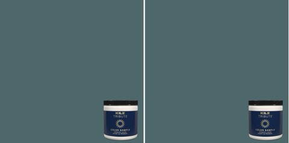
KILZ TRIBUTE Interior Paint and Primer Color Sample, Oceans Deep, 8 Ounces, Pack of 2
Shop on Amazon
13. Add Warm Brass for Classic Elegance
If you want an easy shortcut toward elegant powder room decor, warm brass genuinely deserves your attention.
Brass works particularly well against deep green, navy, charcoal, cream, taupe, and warm white.
You can introduce it through the faucet, mirror frame, sconces, cabinet hardware, or towel ring.
I recommend repeating the finish two or three times instead of scattering it everywhere at random.
For example, pair a brass faucet with a brass mirror and brass sconces.
That repetition creates visual consistency without making the room look like a showroom for gold hardware.
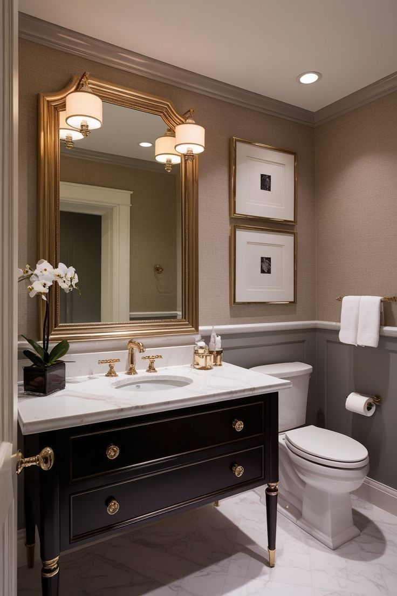
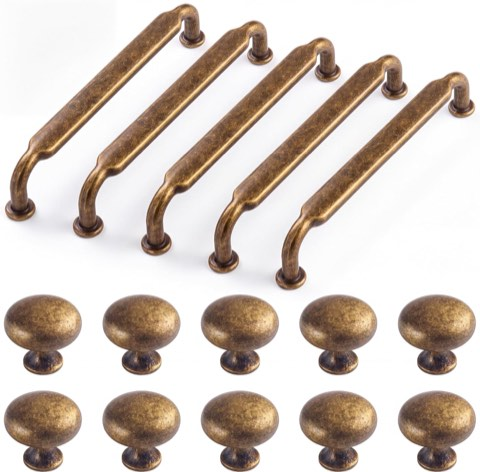
Hicarer 15 Pack Antique Brass Cabinet Hardware Set, 5 Inch Hole Center, Drawer Pulls and Knobs
Shop on Amazon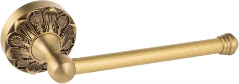
Antique Brass Toilet Paper Holder, Wall Mount Bathroom Tissue Roll Holder
Shop on Amazon14. Choose a Sculptural Mirror
A mirror does much more than help you check whether your hair survived the morning commute.
In a small powder room, the mirror often becomes one of the largest visual elements in the space.
I prefer a distinctive shape over a completely generic rectangular mirror when the rest of the room has simple lines.
- A rounded arch mirror
- An oversized oval mirror
- A decorative antique-style frame
- A slim brass-framed mirror
- A sculptural irregular shape
An oversized mirror can also reflect more of the room and make the space feel visually deeper than it actually is.
Scale is worth considering carefully when choosing a powder room mirror, since an oversized mirror can help the room feel more expansive, while a smaller, more detailed mirror creates a sense of intimacy instead.
Ever noticed how one beautiful mirror can make an otherwise ordinary bathroom suddenly look intentional?
That is exactly the effect you want here.
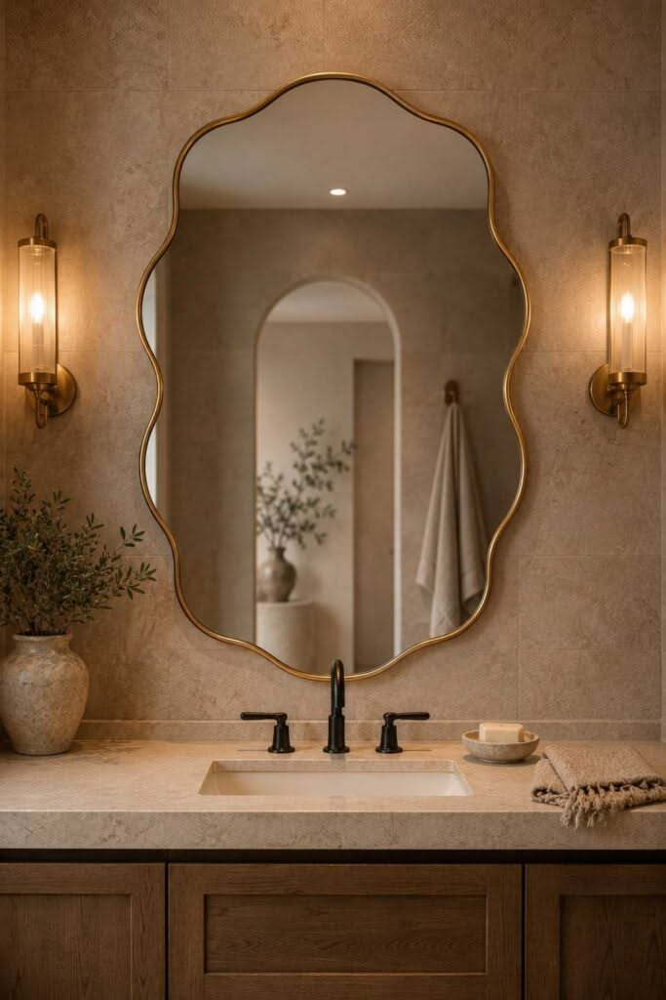
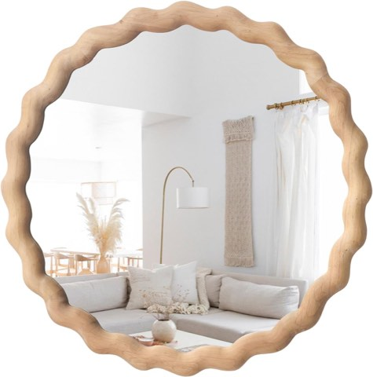
Round Scalloped Wavy Wall Mirror, 18 Inch Wood Frame, Bathroom and Nursery Mirror
Shop on Amazon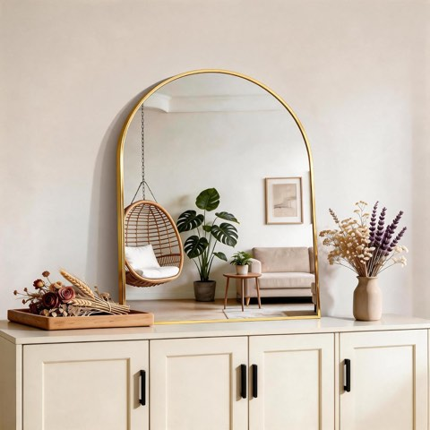
CIRCUMI Gold Arched Wall Mirror, 24 x 30 Inch, Bathroom and Vanity Mirror
Shop on Amazon15. Use Dramatic Wallpaper for an Elegant Powder Room
Wallpaper can completely transform a powder room, and this remains one of my favorite ways to create instant character.
Because powder rooms usually do not contain showers or tubs, you have fewer moisture concerns than you would in a full bathroom.
That makes the walls a fantastic place to introduce pattern freely.
I especially like botanical prints, small-scale traditional patterns, moody florals, and subtle geometric designs.
If the room feels tiny, do not automatically reach for a pale pattern.
A darker wallpaper can actually create a cozy, enveloping feeling instead.
Bold wallpaper also tends to get recommended specifically for powder rooms, since these spaces do not deal with the same steam levels as a bathroom with an actual shower.
My tip: let the wallpaper dictate your accent colors rather than adding several unrelated colors afterward.
Black Vintage Floral Peel and Stick Wallpaper, 17.5 x 393 Inch
Shop on AmazonWRAPXPERT Peel and Stick Wallpaper Tools, Wallpaper Smoothing Tool Kit with Smoother
Shop on AmazonHow Do You Make a Small Powder Room Look Expensive?
You do not need marble everywhere or a designer faucet with a price tag that makes you question your life choices.
Luxury powder room design usually comes from coordination, not from throwing expensive materials into the room.
I like to choose one dominant material, one metal finish, one main color family, and one statement element.
Then I build the rest of the room around those choices.
For example, you could combine:
- Deep olive walls
- A warm brass mirror
- A simple oak vanity
- Cream-colored stone
- Soft warm lighting
Nothing here needs to scream luxury on its own.
Together, though, these choices create a genuinely polished look.
Some designers describe powder rooms as jewel boxes, small spaces where every finish and detail genuinely contributes to the overall experience.
So, before you start shopping, ask yourself one question: what do you want someone to notice first when they walk through the door?
That answer should guide the rest of your design from there.
TAOGIFT Victorian Damask Embossed Peel and Stick Wallpaper Mural for Bedroom
Shop on AmazonRenovators Supply Ondine Space-Saving 16 Inch Pedestal Bathroom Sink, Porcelain
Shop on AmazonWhat Makes a Powder Room Look Elegant?
The best elegant powder room decor does not come from filling every inch with expensive accessories.
It comes from creating a clear visual direction instead.
When I work through small-space decorating ideas, I usually start with three things: color, lighting, and one standout feature.
Think about it.
A powder room usually contains only a few major pieces, so every choice becomes noticeable.
That gives you an opportunity to spend a little more attention on the mirror, faucet, wallpaper, vanity, or lighting instead of trying to upgrade everything at once.
Powder rooms are often described as the jewelry of the house, small enough to take real risks with lighting and decorative details, since the room does not have to perform all the functions of a primary bathroom.
That idea makes perfect sense to me.
A powder room gives you permission to experiment.
Want dark green walls?
Go for it.
Love an oversized mirror?
Use it.
Found wallpaper that feels slightly dramatic?
This might actually be the room for it.
BYOLIIMA Modern Gold Globe Wall Sconce Set of 2 for Bathroom Vanity Lighting
Shop on AmazonFreestanding Bathroom Console Sink, Bathroom Vanity with Sink
Shop on AmazonFinal Thoughts on Elegant Powder Room Decor
The best elegant powder room decor does not try to make a tiny bathroom behave like a giant primary suite.
It embraces the room's actual size and uses that limitation as an advantage instead.
Start with a strong color palette.
Add a statement mirror, beautiful lighting, and one memorable material.
Then layer in practical accessories, artwork, texture, and a little personality on top.
Most importantly, do not play it too safe with any of it.
A powder room gives you one of the easiest opportunities in the entire house to experiment with wallpaper, saturated color, unusual lighting, dramatic mirrors, and beautiful finishes.
The goal, really, is a room that delights guests and puts a smile on their faces the moment they walk through the door.
And honestly, if a tiny room containing nothing more than a toilet and sink can make someone stop and say, "Wow, I love this," that is a pretty successful decorating project by any measure.